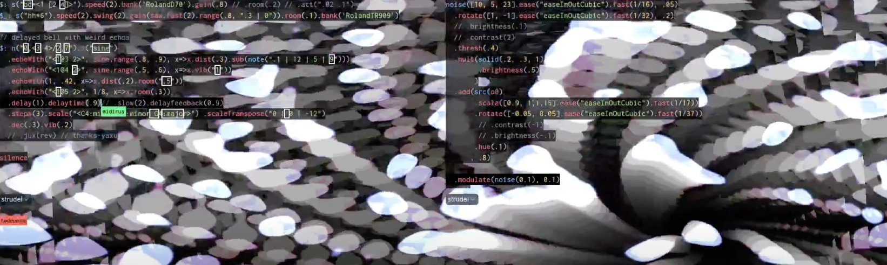

→ Click here if you've paid!
TODEPOND PONDCAST: Living patterns
Well then! It's time for another weekly— No, they're really not weekly, are they. They haven't been weekly for a while. It really is because of how busy I've been. First I was in Belgium, then I was in Berlin, then I was in Los Angeles, and last week... Last week I was at a wedding. So here we are with another non-weekly episode of the...
üê∏ TODEPOND PONDCAST üê∏
I'm tradition, it'll be double length, to make sure we keep the streak going.
What's new?
Living patterns
Great news! My submission to ICLC got accepted!
I told you about it last time, but I submitted a workshop to a live coding conference in Barcelona and I got accepted. And of course, I'm really pleased.
One reviewer gave me a score of 30, which means a "strong acceptance", and the other one gave me a score of 20, which means an "acceptance", but not a strong one or weak one, just a normal one. I have no idea what the maximum score is. If it's one hundred, that would be really bad, so it's probably not.
Anyway, yes, I'm relieved that the reviewers seemed to 'get it', and also daunted that I now need to prepare a workshop. The submission itself needed to be quite detailed, so I've prepared quite a lot already. So... the workshop is ready, but I am not, so I better get cracking.
Natural code
Speaking of submissions, the SPLASH programming conference has now officially ended.
Unfortunately, this means that our paper, Dialogues on natural code has now stopped being freely available. You now have to pay money to access it. And none of that money goes to me or my co-author, Dave Ackley. Quite the opposite! We had to pay large amounts of money ourselves, just for this thing to be sold by and for someone else. It's utterly ridiculous.
I'm allowed to post up a pre-print of the paper on my personal website, and I will be doing that. But I think I'd like to create a bit of interest in the paper, and kind of... raise awareness of the fact that so much science is hidden behind paywalls for the vast majority of the world's population.
Regardless of all this, I'm still very pleased that I did write this paper with Dave. It was a great experience on the whole and I learned bucketloads. But that doesn't mean there aren't aspects worth criticising!
Anyway... I'll have a think.

Logiverse
Here's an update from the tadi web.
A while ago, I made a little microblogging experiment called Login to practise some skills. It's a mini clone of something like bluesky or mastodon but much much worse.
The fun part of being part of the tadi web is that it's really easy for other people to build stuff with it or on top of it too. And that's what happened.
Many other community members have built their own versions of the Login site, and all of these different sites are now talking to each other. This means you can post on one site, and it'll appear on all the others. It shares the load of power across the network. It's a distributed system.
There are also various custom clients, like one called Logarithm that lets you log in to any other site. And some people have made clients that let them post from the command line on their computer. And there's even an iPhone app!
Together, all of these different things make up the Logiverse so I made a little signpost website to help to introduce it to people.
Interest in Login seems to fluctuate, with each wave getting more exciting than the last, so I'm looking forward to what happens next. It definitely feels like the next chapter of my tadi web work.
And now... part two...
TODEPOND PONDCAST: Live patterns
What else is new?
Pasta gang
I have continued participating in "pastagang", the collaborative music making that I introduced last time.
Many sessions have been recorded and uploaded to this youtube playlist. You can see us get better (and worse) over time.
Tristan de Cacqueray has started editing and remixing the improvised tracks that we end up making.
And a couple of pastagang participants (Hannes Güdelhöfer and Anders Kaare) have submitted improvements to flok, the collaboration tool that we use, made by Damián Silvani. And great news! One of them has been accepted and merged
I've also started a very long write-up of my pastagang experience so far. I'm writing and releasing it bit by bit.
London live coding
I finally managed to attend a London live coding meetup this week! And of course, I showed Arroost to some people there. But I also showed them pastagang and the collaborations we've been doing.
And I invited everyone to join in and jump into the collaborative environment with their laptops. And it was mad! I've never seen so many people editing one visual / one sound all together at the same time. There were a bunch of people who joined remotely too.
It was pure chaos and carnage, and we crashed the thing a few times by accident, but it was very exciting too. I've never done anything like that before.
One day later, a Slovenian live coding meetup did the same thing! Except, this time, I was one of the remote participants. It was mad fun. They went so intense.
I think there's something special about these moments of long distance collaboration. I don't yet know what it really is but it feels like stars aligning! I'm going to investigate further.
There's no one else left
I should give you a little update about the future.
People are still waiting for me to do Torn Leaf Zero, the first exhibition of Torn Leaf, and I'm working on it! At some point, I'm going to contact all entrants to give them an update. I know how to do it justice, and I'm working on it.
And I'm still working on the next video, Top 99 Ways To Make Sand. I'm still working towards a trailer, and I've been iterating on the pacing of that.
Flora's been working on some animation for it, and you might get a sneak peak if you follow her on her bluesky or instagram.
Right, that's it! Thank you for listening along and thank you for being here. And THANK YOU for all your support. I can't do all this without you so, yeah, thank you. Wherever you are in the world........ Whatever you're doing.... I hope you have a great week.
Days since tode fell asleep: 718Days since bot went missing: 683
Days since berd flew away: 346
Back to the pondcast.